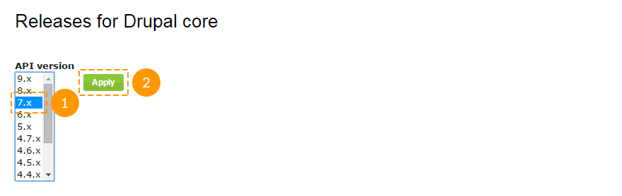
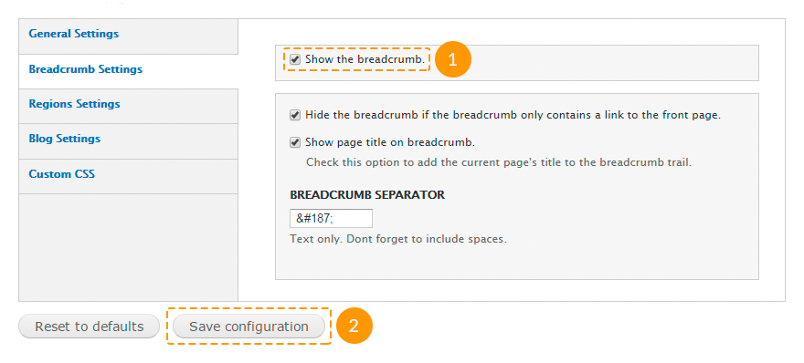
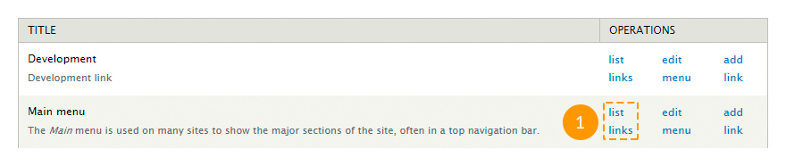
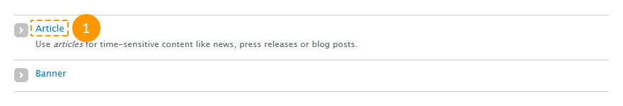

Подготовка
Минимальные требования
Для установки и запуска Drupal ваш хостинг-сервер должен соответствовать минимальным требованиям этого движка. Большинство хостинг-компаний отвечают этим требованиям. Однако, могут быть исключения, поэтому вы должны проверить следующие требования.
Дисковое пространство
Минимальная установка Drupal требует 15 Мб свободного дискового пространства. 60 Мб требуется для сайта с большим количеством установленных тем и модулей. Имейте в виду, что вам понадобиться гораздо больше пространства для загружаемых пользователями файлов, медиа, резервного копирования и других файлов.
Web-сервер
Apache, Nginx или Microsoft IIS.Подробнее о требованиях к серверу
База данных
MySQL 5.0.15 или выше с PDO, PostgreSQL 8.3 или выше с PDO, SQLite 3.3.7 или выше.
При установке следует учитывать, что не все модули Drupal поддерживают базы данных PostgreSQL и SQLite, а так же то, что демонстрационные данные и настройки шаблона хранятся в формате MySQL. Поэтому мы рекомендуем вам использовать только базу данных MySQL.
PHP
PHP 5.2.5 или выше (5.3 рекомендуется).Подробнее о требованиях PHP
Скачивание движка Drupal
Пропустите данный шаг, если у вас уже есть скаченный/установленный движок Drupal.
Первым шагом развертывания сайта на базе Drupal является загрузка движка Drupal с официального сайта http://drupal.org/.

На открывшейся странице вы можете скачать zip- или tar.gz-архив с файлами ядра.
Для того, чтобы скачать последнюю версию Drupal, нажмите кнопку Download Drupal X.XX (Скачать Drupal X.XX), где X.XX - номер последней версии Drupal.
В случае, если вам необходима более ранняя версия Drupal, перейдите по ссылке Other Releases (Другие версии):

На открывшейся странице в поле API Version (Версия API) выберите нужную ветку версий Drupal и нажмите кнопку Apply (Применить):

Ниже появится полный список версий в данной ветке, и вы сможете скачать нужную вам версию.
Проверьте требования шаблона относительно требуемой версии Drupal и убедитесь, что вы скачиваете нужную версию.
Извлечение файлов
После загрузки Drupal вам потребуется извлечь файлы и папки из архива.
Вы можете сделать это с помощью программ WinZip(PC), StuffitExpander(MAC) и т.п.
Посмотрите следующие инструкции по извлечению файлов из архивов WinZip (PC) и StuffitExpander (MAC).
Внимание! Если в панели управления вашим хостингом доступна функция "Распаковать" файлы, вы можете загрузить на сервер сам .zip архив и распаковать его там.
Загрузка Drupal на сервер
В случае, если вы распаковали файлы локально на вашем компьютере, вам потребуется загрузить их на хостинг-сервер.
Drupal должен быть загружен в корневую папку вашего хостинг-сервера. Как правило, она называется WWW или public_html. Если вы не уверены, обратитесь к вашему хостинг-провайдеру за подробной информацией.
Файлы могут быть загружены на сервер с помощью файловых менеджеров, таких как FileZilla, TotalCommander т.п. Существует ряд дополнений для браузеров (например, FireFTP для Mozilla Firefox). Также некоторые хостинг-провайдеры предоставляют такую услугу, как файловый менеджер. Проверьте свою панель управления хостингом или обратитесь за подробной информацией к своему хостинг-провайдеру.
Вы можете посмотреть видео-инструкцию Как загрузить файлы на сервер или Как загрузить файлы с помощью cPanel (WebHost менеджер, WHM).
Создание базы данных
Как уже говорилось выше, для установки Drupal вам понадобится база данных MySQL. База данных может быть создана с помощью панели управления хостингом.
Вы можете связаться со своим хостинг-провайдером для получения помощи в создании базы данных на вашем хостинге.
В процессе создания базы данных вы получите следующие данные:
- Имя сервера базы данных или имя хоста.
- Имя базы данных.
- Имя пользователя базы данных.
- Пароль пользователя базы данных.
Пожалуйста, запомните эти данные. Они вам пригодятся в процессе установки.
Вы также можете посмотреть следующие инструкции:
Установка Drupal и темы
В данном разделе описываются различные способы установки Drupal движка и темы на вашем сайт. Следуйте данным указаниям, если Drupal еще не установлен на вашем сервере.
Перед тем, как продолжить, необходимо решить, вы хотите установить Drupal с демонстрационными данными или же без них. Демонстрационные данные шаблона сделают ваш сайт в точности таким же, как на странице предварительного просмотра шаблона. Будут установлены все модули, текстовые блоки, медиа-файлы и прочее.
Если вы не готовы установить демонстрационные данные, перейдите к шагу "Установка темы без демонстрационных данных". вы также сможете установить их позже. Для этого следуйте указаниям в разделе "Установка темы с демонстрационными данными на существующий сайт".
Установка темы с демонстрационными данными
Файлы профиля демонстрационных данных должны быть загружены на сервер ПЕРЕД началом установки Drupal!
Для установки темы с демонстрационными данными выполните следующие действия:
- Скопируйте папку sites/ из архива с шаблоном в корневую папку Drupal-сайта на вашем сервере. вы можете заменить существующие файлы. Данная папка содержит файлы темы, модули, библиотеки, медиа-файлы и прочее.
- Скопируйте папку sources/demo_profile/ из архива с шаблоном в папку profiles/ Drupal-сайта на вашем сервере. В данной папке содержится профиль, который поможет установить демонстрационные данные.
- Скопируйте файл sources/install.inc из архива с шаблоном в папку includes/ Drupal-сайта на вашем сервере. Вам нужно заменить существующий файл.
- Скопируйте файл sources/system.install из архива с шаблоном в папку modules/system/ Drupal-сайта на вашем сервере. Вам нужно заменить существующий файл.
Замена этих файлов добавит новую опцию в процесс установки и никак не повлияет на сам движок.
- Введите адрес вашего сайта в адресной строке браузера, чтобы начать процедуру установки Drupal.
- На начальной странице установки вам будет предложено выбрать профиль установки. Выберите Demonstration site (Демонстрационный сайт) и нажмите кнопку Save and Continue (Сохранить и продолжить):

- Следуйте инструкциям на экране. Заполните поле имени базы данных, имени пользователя, пароля и хоста базы данных, полученных при создании базы данных.
- На шаге Choose snapshot (Выберите снапшот) выберите снапшот с названием скачанной темы, как показано на рисунке ниже, и нажмите кнопку Restore (Восстановить).
Важно установить (развернуть) снапшот для того, чтобы заставить ваш сайт выглядеть, как лайв-демо шаблона.

Снапшот представляет собой копию базы данных с демонстрационными данными, а также файл с информацией об использованных модулях. Сохранен снапшот в формате базы данных MySQL.
- Нажмите на ссылку Visit your new site (Посетите свой новый сайт).

Чтобы зайти на сайт в качестве администратора, используйте имя пользователя admin и пароль admin123. В целях безопасности мы рекомендуем вам сменить пароль сразу же после установки.
- Установка Drupal почти завершена. Последнее, что необходимо сделать, - обновить таблицы базы данных. В адресной строке браузера введите http://www.example.com/update.php, где www.example.com - адрес вашего сайта.
- Следуйте инструкциям на экране.
- После обновления перейдите по одной из ссылок: Front page (Главная страница сайта) или Administration pages (Панель администрирования сайта).
Вы можете просмотреть следующие инструкции:
Установка темы без демонстрационных данных
Для установки темы без демонстрационных данных выполните следующие указания:
- Скопируйте содержимое папки sites/all/themes/ из архива с шаблоном в папку sites/all/themes/ Drupal-сайта на вашем сервере.
Обратите внимание, что некоторые элементы шаблона реализованы с помощью модулей. На данном этапе установки модули не подключаются, поэтому внешний вид и функционал темы может несколько отличаться от того, что вы видели на странице предварительного просмотра шаблона.
- Для установки модулей вам необходимо скопировать папки sites/all/modules/ и sites/all/libraries/ из архива с шаблоном в папку sites/all/ Drupal-сайта на вашем сервере. Если вы не хотите устанавливать использованные в шаблоне модули, пропустите данный шаг.
- Введите адрес вашего сайта в адресной строке браузера, чтобы начать процедуру установки Drupal.
- Следуйте инструкциям на экране. Заполните поле имени, имени пользователя, пароля и хоста базы данных, полученных при ее создании.

- Зарегистрируйте администратора сайта.
- Войдите на свой сайт, используя имя и пароль администратора, указанные при установке.
- В панели администрирования сайта перейдите на страницу Appearance (Оформление) либо в адресной строке браузера наберите http://www.example.com/?q=admin/appearance, где www.example.com - адрес вашего сайта.
- Найдите только что добавленную тему и нажмите кнопку Enable and set default (Активировать и установить по умолчанию).

- Если на втором шаге вы скопировали папки с модулями, зайдите на страницу Modules (Модули) в панели администрирования сайта либо в адресной строке браузера наберите http://www.example.com/?q=admin/modules, где www.example.com - адрес вашего сайта. Активируйте добавленные модули. Настраивать подключенные модули вам придется на свое усмотрение.
Вы можете просмотреть следующие инструкции:
Установка темы с демонстрационными данными на существующий сайт
Установка темы с демонстрационными данными заменит весь существующий контент и настройки вашего сайта на собственные!
Мы настоятельно рекомендуем вам создать резервную копию базы данных Drupal перед установкой темы с использованием снапшота.
Если у вас уже есть работающий сайт на Drupal, но вы все же хотите установить тему с демонстрационными данными, выполните следующие действия:
- Скопируйте содержимое папки sites/all/ из архива с шаблоном в папку sites/all/ Drupal-сайта на вашем сервере.
- Скопируйте содержимое папки sites/default/ из архива с шаблоном в папку sites/default/ Drupal-сайта на вашем сервере.
Будьте осторожны с заменой файлов! Ни в коем случае не заменяйте файлы settings.php и default.settings.php, иначе вам придется устанавливать Drupal заново!
- Скопируйте папку sources/demo_profile/ из архива с шаблоном в папку profiles/ Drupal-сайта на вашем сервере. В данной папке хранится профиль, который поможет установить демонстрационные данные.
- Войдите на сайт в качестве администратора.
- В панели администрирования сайта зайдите на страницу Configuration -> File system (Настройки -> Файловая система) или перейдите по ссылке http://www.example.com/?q=admin/config/media/file-system, где www.example.com - адрес вашего сайта.
- В поле Private file system path (Конфиденциальный путь файловой системы) установите значение sites/default/private/files.
- Зайдите на страницу Modules (Модули) панели администрирования или перейдите по ссылке http://www.example.com/?q=admin/modules, где www.example.com - адрес вашего сайта.
- Убедитесь, что модуль Demonstration site включен.
- Зайдите на страницу Structure -> Snapshots (Структура -> Снапшоты) панели администрирования и перейдите на вкладку Reset (Восстановление) или перейдите по ссылке http://www.example.com/?q=admin/structure/demo/reset, где www.example.com - адрес вашего сайта.
- Выберите снапшот theme###, где ### - номер приобретенной вами темы.

- Нажмите кнопку Reset (Восстановить). Затем подтвердите действие.
- Войдите на сайт в качестве администратора.
Чтоб зайти на сайт в качестве администратора после установки демонстрационных данных, используйте имя пользователя admin и пароль admin123. В целях безопасности мы рекомендуем вам сменить пароль сразу же после установки.
- Последнее, что необходимо сделать, - обновить таблицы базы данных. В адресной строке браузера введите http://www.example.com/update.php, где www.example.com - адрес вашего сайта.
- Следуйте инструкциям на экране.
- После обновления перейдите по одной из ссылок: Front page (Главная страница сайта) или Administration pages (Панель администрирования сайта).
Вы можете просмотреть следующие инструкции:
Установка темы без демонстрационных данных на существующий сайт
Для установки темы без демонстрационных данных на существующий сайт выполните следующие указания:
- Скопируйте содержимое папки sites/all/themes/ из архива с шаблоном в папку sites/all/themes/ Drupal-сайта на вашем сервере.
Обратите внимание, что некоторые элементы шаблона реализованы с помощью модулей. На данном этапе установки модули не подключаются, поэтому внешний вид и функционал темы может несколько отличаться от того, что вы видели на странице предварительного просмотра шаблона.
- Для установки модулей вам необходимо скопировать папки sites/all/modules/ и sites/all/libraries/ из архива с шаблоном в папку sites/all/ Drupal-сайта на вашем сервере. Если вы не хотите устанавливать использованные в шаблоне модули, пропустите данный шаг.
- Войдите на свой сайт в качестве администратора.
- В панели администрирования сайта перейдите на страницу Appearance (Оформление) либо в адресной строке браузера наберите http://www.example.com/?q=admin/appearance, где www.example.com - адрес вашего сайта.
- Найдите только что добавленную тему и нажмите кнопку Enable and set default (Активировать и установить по умолчанию).
- Если на втором шаге вы добавили папки с модулями, зайдите на страницу Modules (Модули) в панели администрирования сайта либо в адресной строке браузера наберите http://www.example.com/?q=admin/modules, где www.example.com - адрес вашего сайта. Активируйте добавленные модули. Настраивать подключенные модули вам придется на свое усмотрение.
Вы можете просмотреть следующие инструкции:
Настройки
Сайт на основе Drupal содержит множество настроек как сайта в целом, так и отдельных его элементов. В данном разделе будут рассмотрены лишь основные виды настроек.
Настройки сайта
Просмотреть полный список настроек вы можете зайдя на страницу Configuration (Настройки) панели администрирования сайта либо набрав в адресной строке браузера http://www.example.com/?q=admin/config, где www.example.com - адрес вашего сайта.
Чтоб изменить основные настройки сайта, выполните следующие инструкции:
- Зайдите на страницу Configuration -> Site information (Настройки -> Информация о сайте) панели администрирования сайта либо наберите в адресной строке браузера http://www.example.com/?q=admin/config/system/site-information, где www.example.com - адрес вашего сайта.
-
Измените необходимые параметры:
- название сайта;
- слоган сайта;
- электронный адрес сайта;
- количество постов на странице блога (или на главной странице, если у вас есть посты, прикрепленные к главной);
- адрес главной страницы сайта;
- адрес страницы 403 (доступ запрещен);
- адрес страницы 404 (страница не найдена).

- После внесения необходимых изменений, нажмите кнопку Save configuration (Сохранить настройки).
Настройки темы
Каждая тема имеет набор собственных настроек.
Чтобы изменить настройки темы, выполните следующие действия:
- В панели администрирования сайта зайдите на страницу Appearance (Оформление) либо в адресной строке браузера наберите http://www.example.com/?q=admin/appearance, где www.example.com - адрес вашего сайта.
- Нажмите на ссылку Settings (Настройки) под именем вашей темы:

-
На вкладке General Settings (Общие настройки) вы можете задать следующие параметры:
- отобразить/скрыть логотип, название сайта, слоган, аватары авторов постов, аватары авторов комментариев, состояние проверки авторов комментариев, иконку для избранного, главное и вспомогательное меню;
- использовать логотип по умолчанию (из темы) или загрузить собственный;
- использовать иконку для избранного (фавикон) по умолчанию (из темы) или загрузить собственную;
- закрепить меню вверху окна браузера.

-
На вкладке Breadcrumb Settings (Настройки "хлебных крошек") вы можете задать следующие параметры:
- отобразить/скрыть "хлебные крошки";
- отобразить/скрыть "хлебные крошки", если они содержат только ссылку на главную страницу сайта;
- задать разделитель между ссылками "хлебных крошек".

- На вкладке Blog Settings (Настройки блога) вы можете задать заголовок блока. Оставьте данное поле пустым, чтобы заголовок блога совпадал с названием соответствующей ссылки меню.

- На вкладке Custom CSS (Пользовательский CSS) вы можете задать собственные стили для установленной темы.

Данная опция относится только к приобретенной вами теме. Вы не сможете задать стили для других тем, таких как Seven и прочих.
Настройки блоков
Чтобы настроить блоки, использованные в шаблоне, следуйте данным инструкциям:
- Войдите на сайт в качестве администратора.
- В панели администрирования зайдите на страницу Structure -> Blocks (Структура -> Блоки) или в адресной строке браузера наберите http://www.example.com/?q=admin/structure/block, где www.example.com - адрес вашего сайта.
- На открывшейся странице вы можете перетаскивать блоки в разные регионы:

- Вы можете перемещать блоки в разные регионы, используя выпадающее меню в колонке Region (Регион):

- Вы можете задать настройки для каждого блока в отдельности, нажав на ссылку configure (настроить) в колонке Operations (Операции):

-
На странице настроек блока вы можете задать следующие параметры:
- заголовок блока;
- пользовательский CSS-класс для данного блока;
- регион блока для каждой темы в отдельности;
- настройки отображения (для отдельных страниц, отдельных типов материалов, отдельных ролей пользователей, для каждого пользователя);

Некоторые блоки могут содержать дополнительные настройки.
- Вы также можете попасть на страницу настроек блока со страниц вашего сайта. Для этого наведите курсор мышки на нужный вам блок, затем нажмите на пиктограмму шестеренки в правом верхнем углу блока и выберите пункт Configure block (Настроить блок). Эта опция будет доступна только, если вы войдете на сайт в качестве администратора:

Настройки модулей
В наших шаблонах используются следующие модули:
- AddThis - добавляет кнопки "Поделится в социальных сетях";
- Administration menu - является более удобной альтернативой верхнего административного меню;
- Block Class - добавляет пользовательский класс на блоки;
- Cctags - позволяет создать облако тегов;
- Colorbox - позволяет открывать изображения в лайтбоксах;
- Demonstration site - позволяет создавать резервные копии базы данных;
- Flex Slider - добавляет слайдер;
- Media, Media: Vimeo, Media: YouTube - позволяют добавлять в материал не только изображения, но и также видео и аудио;
- Menu block - позволяет дублировать меню;
- Module Filter - позволяет фильтровать модули в панели администрирования;
- Olark Chat - добавляет возможность вставки чата;
- Panels - позволяет создавать страницы;
- Rate, Voting API - добавляют рейтинг на страницы материала;
- Retina Images - позволяет нарезать изображения для retina-экранов в размере 2x;
- Simple Google Maps - добавляет возможность вставки Google-карты на основе адреса;
- Superfish - добавляет выпадающее меню;
- TM Follow - создает два блока ссылок, которые связывают сайт и его пользователей с сайтами социальных сетей;
- Views, Semantic Views, Views Isotope, Views Slideshow - позволяет создавать выборку материала, комментариев, пользователей и представлять их в виде блоков и страниц;
- Wysiwyg - добавляет текстовый редактор;
- и другие.
Каждый из модулей может содержать собственные настройки. Чтобы настроить модуль, выполните следующие инструкции:
- Войдите на сайт в качестве администратора.
- В панели администрирования зайдите на страницу Modules (Модули) или в адресной строке браузера наберите http://www.example.com/?q=admin/modules, где www.example.com - адрес вашего сайта.
- Найдите нужный вам модуль. Для этого можете воспользоваться фильтром.
- Нажмите ссылку Configure (Настроить) напротив нужного вам модуля.
- Сделайте необходимые изменения и сохраните настройки.
Вы также можете посмотреть следующие инструкции:
Управление содержимым
В данной главе мы рассмотрим, каким образом формируется содержимое сайта, а также как управлять тем или иным видом содержимого, если вы выбрали установку с демонстрационными данными.
Управление меню
В шаблоне могут быть использованы следующие типы меню:
- Main menu (Главное меню) содержит ссылки на основные страницы сайта;
- User menu (Пользовательское меню) содержит ссылки, связанные с учетной записью пользователя, такие как "Зарегистрироваться", "Войти" и пр.;
- Footer menu (Меню в футере сайта) дублирует главное меню.
Рассмотрим каждое из них более детально.
Главное меню
Чтобы отредактировать ссылки главного меню, выполните следующие действия:
- В панели администрирования зайдите на страницу Structure -> Menus (Структура -> Меню) или в адресной строке браузера наберите http://www.example.com/?q=admin/structure/menu, где www.example.com - адрес вашего сайта.
- Напротив данного меню нажмите на ссылку List links (Просмотреть ссылки).

- Чтобы добавить ссылку, нажмите Add link (Добавить ссылку) вверху страницы.

- Чтобы отредактировать ссылку, нажмите Edit (Редактировать).

- Чтобы удалить ссылку, нажмите Delete (Удалить).

- Чтобы изменить порядок ссылок, перетащите ссылку в нужную позицию, а затем нажмите кнопку Save configuration (Сохранить конфигурацию).

Чтобы настроить выпадающее меню, выполните следующие инструкции:
- В панели администрирования зайдите на страницу Structure -> Blocks (Структура -> Блоки) или в адресной строке браузера наберите http://www.example.com/?q=admin/structure/block, где www.example.com - адрес вашего сайта.
- Найдите блок с названием данного меню.
- Нажмите на ссылку Configure (Настроить) напротив данного блока.
- Внесите изменения в разделе Superfish settings (Настройки Superfish).

- Нажмите кнопку Save block (Сохранить блок).
Чтобы переместить меню, выполните следующие инструкции:
- В панели администрирования зайдите на страницу Structure -> Blocks (Структура -> Блоки) или в адресной строке браузера наберите http://www.example.com/?q=admin/structure/block, где www.example.com - адрес вашего сайта.
- Найдите блок с названием данного меню.
- Переместите блок меню в нужный регион так же, как обычный блок.
- Нажмите кнопку Save blocks (Сохранить блоки).
Пользовательское меню
Пользовательское меню - это стандартное меню Drupal. Оно не имеет выпадающих вложенных меню. Чтобы отредактировать или переместить данное меню, вы можете воспользоваться теми же инструкциями, что и для главного меню.
Меню в футере сайта
Меню в футере сайта дублирует главное меню. Чтобы настроить данное меню, выполните следующие инструкции:
- В панели администрирования зайдите на страницу Structure -> Blocks (Структура -> Блоки) или в адресной строке браузера наберите http://www.example.com/?q=admin/structure/block, где www.example.com - адрес вашего сайта.
- Найдите блок с названием данного меню.
- Нажмите на ссылку Configure (Настроить) напротив данного блока.
-
На открывшейся странице, кроме стандартных полей блока, заполните следующие поля:
- Menu (Меню) - название меню, которое следует дублировать;
- Starting level (Начальный уровень) - видимость блока на странице. Блоки, которые начинаются с первого уровня, всегда будут видны. Блоки, которые начинаются со второго и более уровня, будут видны на страницах, где данные пункты меню будут активными.
- Maximum depth (Максимальная глубина) - количество отображаемых уровней меню. Поставьте 1, чтоб исключить все подменю.

- Нажмите кнопку Save block (Сохранить блок).
Вы также можете посмотреть следующие инструкции:
Управление материалами
В шаблоне присутствуют следующие основные типы материалов:
- Banner (Баннер) представляет собой название компании, логотип и дополнительную информацию. Может использоваться в блоках "Our partners" (Наши партнеры), "Our clients" (Наши клиенты) и т.п.;
- Employee (Сотрудник) представляет собой фотографию сотрудника и короткую информацию о нем. Может использоваться в блоках "Our team" (Наша команда), "Our staff" (Наша персонал) и т.п.;
- FAQ (ЧАВО) представляет собой материал формата "вопрос-ответ". Используется на странице "Часто задаваемые вопросы";
- Map (Карта) представляет собой поле адреса и краткую информацию. Используется в виде Google-карты на странице контактов. Для изменения карты со страницы контактов отредактируйте материал с названием "Our location";
- Portfolio item (Элемент портфолио) представляет собой заголовок, изображение и краткую информацию. Используется на страницах "Portfolio" (Портфолио), "Gallery" (Галерея), "Services" (Услуги) и т.п.;
- Service (Услуга) представляет собой заголовок, изображение и краткую информацию. Может использоваться в блоках "Services" (Услуги) и т.п.;
- Slide (Слайд) представляет собой заголовок, изображение и краткую информацию. Используется в слайдере на главной странице;
- Testimonial (Отзыв) - представляет собой кроткий отзыв и информацию о его авторе. Может использоваться в блоках "Testimonials" (Отзывы), "What people say about us" (Что о нас говорят) и т.п.;
- и прочие.
Изменения данных типов материалов (добавление, редактирование, удаление) сразу же отображаются в блоках и на страницах, где они используются.
Некоторые модули могут добавлять свои типы материалов. К примеру, модуль Panels добавляет тип материала Panel (Панель).
Вы также можете создавать собственные типы материала.
Для изменения, удаления или управления материалом выполните следующие действия:
- Чтобы просмотреть полный список материалов, в панели администрирования зайдите на страницу Content (Материалы) или в адресной строке браузера наберите http://www.example.com/?q=admin/content, где www.example.com - адрес вашего сайта.
- Чтобы создать материал, нажмите на ссылку Add content (Добавить материал).
- На открывшейся странице выберите тип материала.

- Заполните необходимые поля и нажмите кнопку Save (Сохранить).
- Чтобы отредактировать существующий материал, на странице Content (Материалы) в поле Show only items where (Показать только элементы, где) выберите тип материала и нажмите кнопку Filter (Отфильтровать).

- Чтобы отредактировать материал, нажмите ссылку Edit (Редактировать) напротив его названия.
- Чтобы удалить материал, нажмите ссылку Delete (Удалить) напротив его названия.

Вы также можете посмотреть следующие инструкции:
Управление страницами
Все страницы шаблона созданы с помощью модуля Panels (Панели).
Для управления страницами выполните следующие действия:
- Чтоб просмотреть все существующие страницы, в панели администрирования зайдите на страницу Structure -> Pages (Структура -> Страницы) или в адресной строке браузера наберите http://www.example.com/?q=admin/structure/pages, где www.example.com - адрес вашего сайта.
- Чтоб создать страницу, вверху открывшейся страницы нажмите ссылку Add custom page (Добавить пользовательскую страницу).

- Следуйте инструкциям на экране, заполните все необходимые поля, сохраните внесенные данные.
- Чтобы отредактировать существующую страницу, нажмите на ссылку Edit (Редактировать) напротив нужного заголовка.
- Чтобы удалить страницу, в режиме редактирования нажмите на ссылку Delete (Удалить) вверху страницы.

Вы также можете посмотреть следующие инструкции:
Управление представлениями (Views)
Большая часть содержимого шаблона создана с помощью представлений, таких как:
- Archive (Архив) собирает тип материала "Blog entry" (Запись блога), группирует их по месяцам года и выводит в виде блока или страницы.
- Banners (Баннеры) собирает записи материала типа "Banner" (Баннер) и отображает их в качестве блока.
- Categories (Категории) собирает термины таксономии из словаря "Blog categories" (Категории блога) и выводит их в виде блока.
- FAQs (ЧАВО) собирает записи материала типа FAQs(ЧАВО) и выводит их в виде страницы.
- Portfolio (Портфолио) собирает записи материала типа "Portfolio Item" (Элемент портфолио) и выводит их в виде страниц Portfolio (Gallery, Services) в две, три или четыре колонки.
- Portfolio filter (Фильтр портфолио) создает блок фильтра для портфолио, используется в представлении "Portfolio" (Портфолио).
- Recent comments (Последние комментарии) собирает комментарии и выводит их в виде блока или страницы.
- Recent posts (Последние записи) собирает записи материала типа "Blog entry" (Запись блога) и выводит их в виде блока.
- Slider (Слайдер) собирает записи материала типа "Slide" (Слайд) и выводит их в виде блока слайдера.
- Team (Команда) собирает записи материала типа "Employee" (Сотрудник) и выводит их в виде блока.
- Testimonials (Отзывы) собирает записи материала типа "Testimonial" (Отзыв) и выводит их в виде страницы или блока.
- и прочие.
Для управления представлениями выполните следующие действия:
- Чтоб просмотреть все существующие представления, в панели администрирования зайдите на страницу Structure -> Views (Структура -> Представления) или в адресной строке браузера наберите http://www.example.com/?q=admin/structure/views, где www.example.com - адрес вашего сайта.
- Чтобы создать новое представление, нажмите на ссылку Add new view (Добавить новое представление) вверху открывшейся страницы.

- На открывшейся странице заполните название представления, тип материала, вид сортировки, в каком виде отображать.
- Чтобы указать дополнительные параметры, нажмите кнопку Continue & edit (Продолжить и редактировать). Чтобы закончить создание представления, нажмите кнопку Save & exit (Сохранить и выйти).

- Чтобы отредактировать существующее представление, выберите пункт Edit (Редактировать) в выпадающем списке напротив нужного представления.

Не вносите изменения в существующие представления, если вы не уверены в том, что вы делаете.
- Чтобы удалить существующее представление, выберите пункт Delete (Удалить) в выпадающем списке напротив нужного представления.

- Представлениями, которые отображены в виде блоков, можно управлять так же, как и обычными блоками. Вы также можете попасть на страницу настроек представления в виде блока со страниц своего сайта. Для этого наведите курсор мышки на нужный вам блок, затем нажмите на пиктограмму шестеренки в правом верхнем углу блока и выберите пункт Configure block (Настроить блок):

- Аналогичным образом настраиваются представления, которые отображены в виде страниц. Наведите курсор мышки на область содержимого нужной вам страницы, затем нажмите на пиктограмму шестеренки в правом верхнем углу страницы и выберите пункт Edit view (Настроить представление):

Вы также можете посмотреть следующие инструкции:
Управление медиа-содержимым
Загрузка изображений и видео в шаблоне осуществляется по средствам модуля Media (Медиа).
Для управления медиа-содержимым выполните следующие действия:
- Чтоб просмотреть полный список медиа-файлов, в панели администрирования зайдите на страницу Content (Материалы) и перейдите на вкладку Media (Медиа) или в адресной строке браузера наберите http://www.example.com/?q=admin/content/media, где www.example.com - адрес вашего сайта.
- Чтобы удалить существующие изображения или видео, отметьте их, в появившемся поле Operations (Операции) выберите Delete (Удалить) и нажмите кнопку Submit (Подтвердить).

- Для того, чтобы добавить медиа-файл в материал, в режиме создания или редактирования материала нажмите кнопку Select media (Выбрать медиа).

-
В появившемся окне:
- во вкладке Upload (Загрузить) вы можете загрузить изображение с вашего компьютера;
- во вкладке Web вы можете указать ссылку на изображение, размещенное в Интернете, а также ссылку на видео с сайтов YouTube и Vimeo;
- во вкладке Library (Библиотека) вы можете выбрать одно из изображений или видео, уже загруженных на ваш сайт.
Пожалуйста, примите к сведению, что добавить видео вы сможете только для типа материала Blog entry (Запись блога).
Вы также можете посмотреть следующие инструкции:
Olark live chart
Для того, чтобы добавить Olark-чат, как на демо-странице шаблона, выполните следующие действия:
- Зарегистрируйтесь на официальном сайте Olark.
- Заполните все необходимые данные.
- Скопируйте полученный код.
-
1. Зарегистрируйтесь на официальном сайте Olark
-

Заполните все необходимые данные.
-

Скопируйте полученный код.
- На своем сайте в панели администрирования зайдите на страницу Configuration (Настройки) и в разделе Web services (Web-сервисы) выберите Olark settings (Настройки Olark). Вы также можете попасть на данную страницу, перейдя по ссылке http://www.example.com/?q=admin/config/services/olark, где www.example.com - адрес вашего сайта.
- Вставьте скопированный код в поле Olark code (Код Olark)
- Нажмите на кнопку Save configuration (Сохранить настройки).
- Для настройки чата зайдите на сайт Olark под своей учетной записью.
Вы также можете посмотреть следующие инструкции: